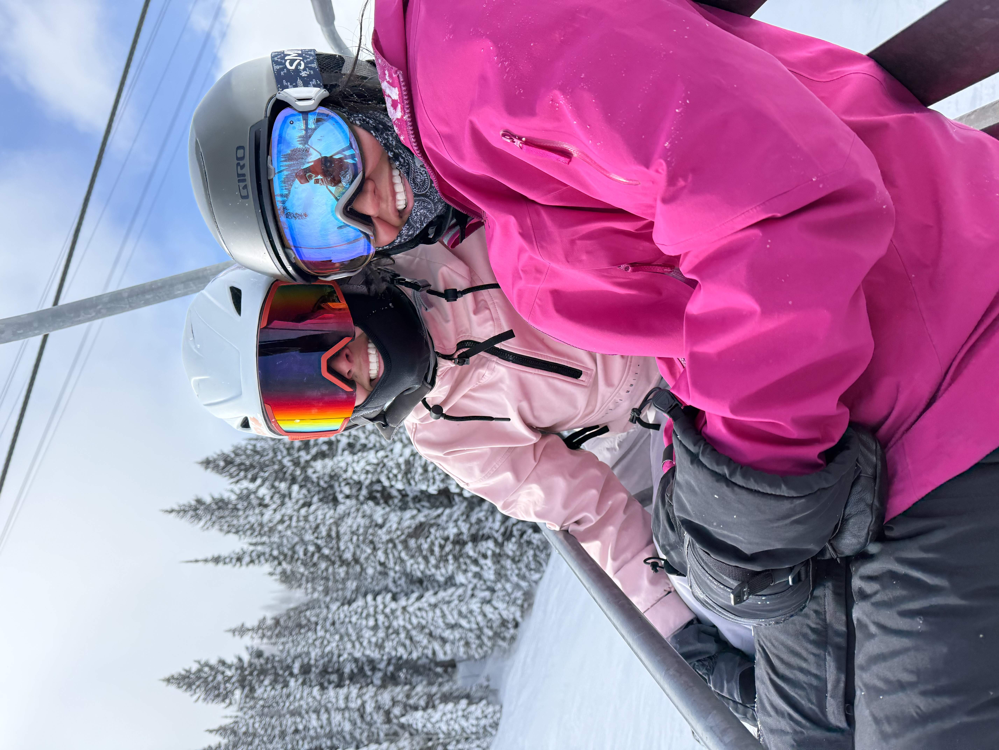
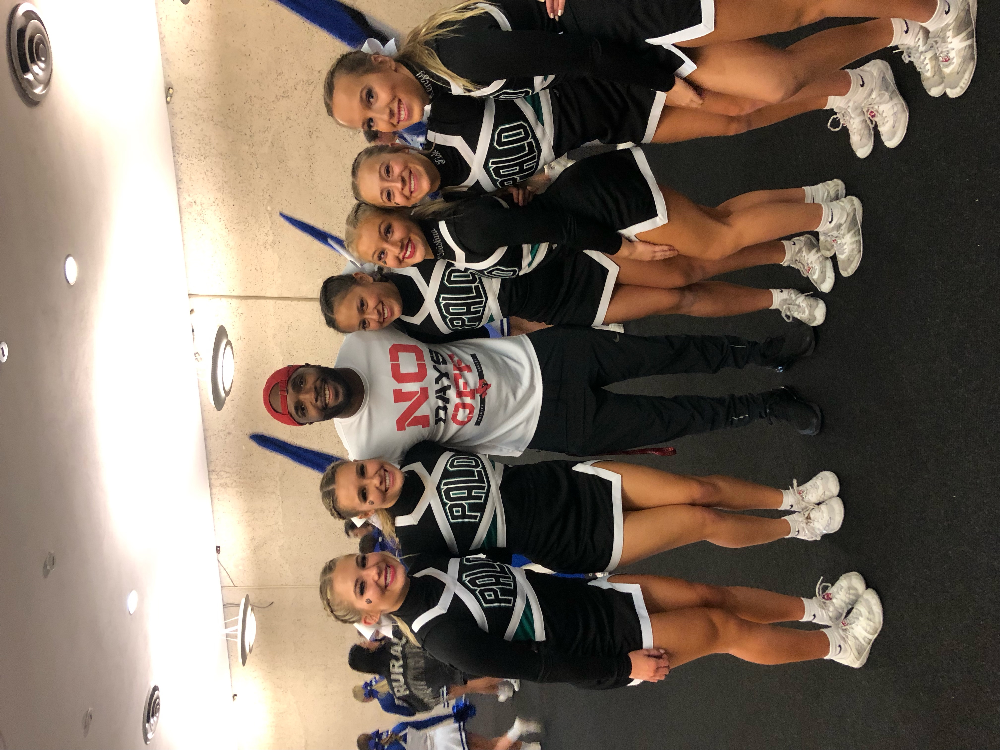

I have been skiing since I was 3 years old. I love skiing because it is a fun way to get outside and enjoy the beautiful mountains. I also enjoy the thrill of going down the slopes and the feeling of freedom that comes with it. Skiing is a great way to stay active and healthy, and it is also a great way to spend time with friends and family. I am looking forward to many more years of skiing and exploring new ski resorts around the world.
Running is another one of my favorite hobbies. I enjoy running because it is a great way to stay in shape and clear my mind. I have been training for a half marathon, and it has been a rewarding experience. Running allows me to set goals and work towards achieving them, and it also gives me a sense of accomplishment when I reach those goals. I find that running helps me to relieve stress and improve my overall well-being.
Cheerleading is a hobby that I have been passionate about since I was 8 years old. I love cheerleading because it combines athleticism, teamwork, and creativity. Being part of a cheerleading team has taught me the importance of working together and supporting each other. I enjoy the energy and excitement of performing routines and cheering on my team. Cheerleading has also helped me to build confidence and make lasting friendships.